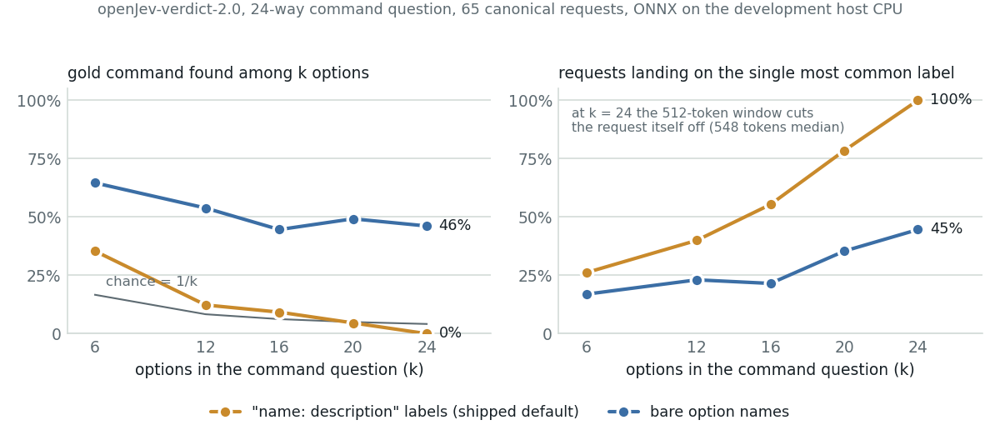

<title>Open Jev Model Zoo</title>
<link rel="stylesheet" href="https://fonts.googleapis.com/css2?family=IBM+Plex+Serif:wght@500;600&family=IBM+Plex+Sans:ital,wght@0,400;0,500;0,600;1,400&family=IBM+Plex+Mono:wght@400;500&display=swap">
<style>
  :root {
    --ground: #f3f5f4; --surface: #ffffff; --ink: #172026; --muted: #5e6b72; --rule: #d3dbd8;
    --accent: #2f6690; --accent-soft: #e3edf4;
    --ok: #2e7d5b; --ok-soft: #e2f1e8; --warn: #c7831c; --warn-soft: #f7ecd6; --bad: #b5432f; --bad-soft: #f6e2dd;
    --readout: #2f6690; --encoder: #c98a2b; --finetuned: #a8404b; --generative: #6b7378;
    --serif: "IBM Plex Serif", Georgia, "Times New Roman", serif;
    --sans: "IBM Plex Sans", system-ui, "Segoe UI", Roboto, sans-serif;
    --mono: "IBM Plex Mono", ui-monospace, Menlo, Consolas, monospace;
  }
  @media (prefers-color-scheme: dark) {
    :root:not([data-theme="light"]) {
      --ground: #0f1518; --surface: #161e22; --ink: #e6ecee; --muted: #98a6ac; --rule: #2a363b;
      --accent: #7fb0d6; --accent-soft: #1c2b36;
      --ok: #63c08f; --ok-soft: #173126; --warn: #e2a64c; --warn-soft: #3a2c15; --bad: #e07a68; --bad-soft: #3d201c;
      --readout: #7fb0d6; --encoder: #e2a64c; --finetuned: #e28a93; --generative: #9aa6ab;
    }
  }
  :root[data-theme="dark"] {
    --ground: #0f1518; --surface: #161e22; --ink: #e6ecee; --muted: #98a6ac; --rule: #2a363b;
    --accent: #7fb0d6; --accent-soft: #1c2b36;
    --ok: #63c08f; --ok-soft: #173126; --warn: #e2a64c; --warn-soft: #3a2c15; --bad: #e07a68; --bad-soft: #3d201c;
    --readout: #7fb0d6; --encoder: #e2a64c; --finetuned: #e28a93; --generative: #9aa6ab;
  }
  * { box-sizing: border-box; }
  body { margin: 0; background: var(--ground); color: var(--ink); font: 16px/1.6 var(--sans); }
  main { max-width: 780px; margin: 0 auto; padding: 2.5rem 1.25rem 5rem; }
  h1 { font: 600 2rem/1.15 var(--serif); margin: 0 0 .4rem; text-wrap: balance; letter-spacing: -.01em; }
  h2 { font: 600 1.35rem/1.25 var(--serif); margin: 2.6rem 0 .7rem; text-wrap: balance; }
  h3 { font: 600 1.02rem/1.3 var(--sans); margin: 1.6rem 0 .4rem; }
  p { margin: .7rem 0; max-width: 68ch; }
  .lede { color: var(--muted); font-size: 1.05rem; max-width: 62ch; }
  .eyebrow { font: 500 .72rem/1 var(--mono); letter-spacing: .12em; text-transform: uppercase; color: var(--accent); margin-bottom: .6rem; }
  a { color: var(--accent); }
  code, .mono { font-family: var(--mono); font-size: .88em; }
  figure { margin: 1.4rem 0; }
  figure svg { max-width: 100%; height: auto; display: block; }
  figcaption { font-size: .82rem; color: var(--muted); margin-top: .5rem; max-width: 68ch; }
  .card-demo { background: var(--surface); border: 1px solid var(--rule); border-radius: 8px; padding: 1rem 1.1rem; margin: 1.2rem 0; }
  .card-demo .req { font: 500 .95rem var(--sans); }
  .card-demo .cmd { font-family: var(--mono); font-size: .85rem; background: var(--ground); padding: .5rem .7rem; border-radius: 5px; margin: .6rem 0; white-space: pre-wrap; }
  .check { display: flex; gap: .6rem; align-items: flex-start; font-size: .9rem; padding: .55rem .7rem; border-radius: 6px; margin-top: .6rem; }
  .check.bad { background: var(--bad-soft); color: var(--ink); border-left: 3px solid var(--bad); }
  .check.ok { background: var(--ok-soft); border-left: 3px solid var(--ok); }
  .check.warn { background: var(--warn-soft); border-left: 3px solid var(--warn); }
  .check b { font-family: var(--mono); font-weight: 500; white-space: nowrap; }
  .actions { display: flex; gap: .5rem; margin-top: .7rem; }
  .btn { font: 500 .8rem var(--sans); padding: .35rem .7rem; border-radius: 5px; border: 1px solid var(--rule); background: var(--surface); color: var(--ink); }
  .btn.primary { background: var(--accent); color: #fff; border-color: var(--accent); }
  .tablewrap { overflow-x: auto; margin: 1rem 0; }
  table { border-collapse: collapse; width: 100%; font-size: .86rem; font-variant-numeric: tabular-nums; }
  th { text-align: left; font: 500 .7rem/1.3 var(--mono); letter-spacing: .08em; text-transform: uppercase; color: var(--muted); padding: .45rem .6rem .35rem 0; border-bottom: 1px solid var(--rule); white-space: nowrap; }
  td { padding: .45rem .6rem .45rem 0; border-bottom: 1px solid var(--rule); vertical-align: top; }
  td.n, th.n { text-align: right; font-family: var(--mono); font-size: .84rem; }
  tr.lead td { font-weight: 600; }
  .swatch { display: inline-block; width: .7em; height: .7em; border-radius: 2px; margin-right: .4em; vertical-align: -1px; }
  .kv { display: grid; grid-template-columns: repeat(auto-fit, minmax(160px, 1fr)); gap: .6rem; margin: 1rem 0; }
  .kv div { background: var(--surface); border: 1px solid var(--rule); border-radius: 6px; padding: .6rem .75rem; }
  .kv b { display: block; font: 500 1.35rem/1.1 var(--mono); }
  .kv span { font-size: .78rem; color: var(--muted); }
  .note { border-left: 3px solid var(--accent); background: var(--accent-soft); padding: .7rem 1rem; border-radius: 0 6px 6px 0; font-size: .92rem; margin: 1.2rem 0; }
  .pending { color: var(--warn); font-family: var(--mono); font-size: .8rem; }
  ul { padding-left: 1.2rem; } li { margin: .3rem 0; max-width: 68ch; }
  .pill { font: 500 .7rem var(--mono); padding: .1rem .45rem; border-radius: 999px; border: 1px solid var(--rule); color: var(--muted); white-space: nowrap; }
  footer { margin-top: 3rem; font-size: .82rem; color: var(--muted); border-top: 1px solid var(--rule); padding-top: 1rem; }
  @media (max-width: 480px) { h1 { font-size: 1.55rem; } .actions { flex-wrap: wrap; } }
</style>
<style>
  .spec { display: grid; grid-template-columns: repeat(auto-fit, minmax(290px, 1fr)); gap: .6rem 1.2rem; font-size: .84rem; margin: .5rem 0 .9rem; padding: .7rem .9rem; background: var(--surface); border: 1px solid var(--rule); border-radius: 6px; }
  .spec div { max-width: none; }
  .spec span { display: block; font: 500 .66rem/1.4 var(--mono); letter-spacing: .08em; text-transform: uppercase; color: var(--muted); }
  .card-head { display: flex; flex-wrap: wrap; gap: .5rem .8rem; align-items: baseline; }
  .card-head .pill { margin-left: 0; }
  td.wrap { white-space: normal; }
  .zoo td:first-child { white-space: nowrap; }
</style>

<main>
<div class="eyebrow">Companion to the Jevlet results page · September 2026</div>
<h1>The open Jev reproductions, one model at a time, on a 23-command switch catalog</h1>
<p class="lede">Three open reproductions of Jev's typed-decision interface and one entailment baseline were run zero-shot on the study's router battery and confirm gate; two more were not run, for reasons this page states. One card per model: what its own model card says it is, how it was wired to the same questions, its numbers on 260 and 519 rows, its cost on the board's CPU, and the way it fails.</p>

<div class="kv">
  <div><b>61.7% / 51.4%</b><span>tool / command on all 519 rows for the best zero-shot encoder (Laya, typed-decisions head); the 4B readout scores 82.5% / 72.4% on the same rows</span></div>
  <div><b>0.757</b><span>best zero-shot gate AUROC (area under the ROC curve), Laya's English head on 939 pairs; it still accepts 101 of 156 dangerous negatives</span></div>
  <div><b>46% vs 0%</b><span>openJev-verdict on the 24-way command question with bare option names vs "name: description" labels, 65 canonical requests (probe re-run below)</span></div>
  <div><b>274–799 ms</b><span>one yes/no question on the board's CPU at four threads, NLI baseline to DeBERTa-large; 3.3–5.8 s for the four-question battery</span></div>
</div>

<div class="note"><b>What ran where.</b> Accuracy, calibration and gate numbers come from the development host: openJev-verdict through its ONNX file on the Grace CPU, Laya, open-jev-deberta and the NLI baseline through their PyTorch SDKs on the GB10 GPU. The board (Qualcomm QCS9075) contributed latency only, from <code>results/latency-cpu-board.json</code>, with the production NPU (neural processing unit) tenant running. Every model is used as shipped, zero-shot, on one domain; the 259 authored rows carry LLM-written, LLM-verified labels with human review pending.</div>

<h2>Six entries, four packings of one question</h2>
<p>The interface is the same for all of them: a state (the operator's sentence) and typed questions (CHOICE over options, NOUL (a yes/no question)), one distribution per question, nothing generated. What differs is how each model packs the options next to the state, and that packing sets the option budget before any training does.</p>

<figure>
<svg viewBox="0 0 760 356" role="img" aria-label="Four rows show how each model packs one 24-option question: Verdict puts label slots before the state in a 512-token window; Laya scores each option at its own mask token under a fixed head budget; open-jev-deberta packs state, question and options as spans in 512 tokens; the NLI baseline runs one pass per option.">
  <defs><marker id="arz" viewBox="0 0 10 10" refX="9" refY="5" markerWidth="8" markerHeight="8" orient="auto-start-reverse"><path d="M0,0 L10,5 L0,10 z" fill="currentColor"/></marker></defs>
  <g font-family="IBM Plex Sans, sans-serif" font-size="12" fill="currentColor">
    <text x="0" y="14" font-family="IBM Plex Mono, monospace" font-size="10" fill="var(--accent)" letter-spacing=".1em">ONE STATE, ONE 24-OPTION QUESTION, FOUR PACKINGS</text>
    <text x="596" y="14" font-family="IBM Plex Mono, monospace" font-size="10" fill="var(--muted)">what gets scored</text>

    <text x="0" y="48" font-weight="600">openJev-verdict</text>
    <text x="0" y="64" font-size="11" fill="var(--muted)">GLiClass, 151M</text>
    <rect x="150" y="30" width="420" height="52" rx="6" fill="var(--surface)" stroke="var(--rule)"/>
    <text x="160" y="50" font-family="IBM Plex Mono, monospace" font-size="11"><tspan fill="var(--accent)">&lt;&lt;LABEL&gt;&gt;</tspan>It is desc 1 … <tspan fill="var(--accent)">&lt;&lt;LABEL&gt;&gt;</tspan>It is desc 24</text>
    <text x="160" y="70" font-family="IBM Plex Mono, monospace" font-size="11"><tspan fill="var(--accent)">&lt;&lt;SEP&gt;&gt;</tspan>Question: … Context: <tspan fill="var(--bad)">state (cut first)</tspan></text>
    <line x1="570" y1="56" x2="594" y2="56" stroke="currentColor" stroke-width="1.2" marker-end="url(#arz)"/>
    <text x="598" y="52" font-size="11">25 label slots, one</text>
    <text x="598" y="67" font-size="11">logit each, 512 tokens</text>

    <text x="0" y="128" font-weight="600">Laya</text>
    <text x="0" y="144" font-size="11" fill="var(--muted)">option markers, 421M</text>
    <rect x="150" y="110" width="420" height="52" rx="6" fill="var(--surface)" stroke="var(--rule)"/>
    <text x="160" y="130" font-family="IBM Plex Mono, monospace" font-size="11">state … question</text>
    <text x="160" y="150" font-family="IBM Plex Mono, monospace" font-size="11"><tspan fill="var(--accent)">[MASK]</tspan>opt 1 <tspan fill="var(--accent)">[MASK]</tspan>opt 2 … <tspan fill="var(--accent)">[MASK]</tspan>opt 24  <tspan fill="var(--muted)">budget 192/256</tspan></text>
    <line x1="570" y1="136" x2="594" y2="136" stroke="currentColor" stroke-width="1.2" marker-end="url(#arz)"/>
    <text x="598" y="132" font-size="11">one score per mask,</text>
    <text x="598" y="147" font-size="11">softmax over options</text>

    <text x="0" y="208" font-weight="600">open-jev-deberta</text>
    <text x="0" y="224" font-size="11" fill="var(--muted)">span head, 0.4B</text>
    <rect x="150" y="190" width="420" height="52" rx="6" fill="var(--surface)" stroke="var(--rule)"/>
    <text x="160" y="210" font-family="IBM Plex Mono, monospace" font-size="11"><tspan fill="var(--accent)">[STATE]</tspan> state (≤256) <tspan fill="var(--accent)">[Q]</tspan> instructions</text>
    <text x="160" y="230" font-family="IBM Plex Mono, monospace" font-size="11"><tspan fill="var(--accent)">[OPT]</tspan> opt 1 <tspan fill="var(--accent)">[OPT]</tspan> opt 2 … <tspan fill="var(--accent)">[OPT]</tspan> opt 24  <tspan fill="var(--muted)">512 tok total</tspan></text>
    <line x1="570" y1="216" x2="594" y2="216" stroke="currentColor" stroke-width="1.2" marker-end="url(#arz)"/>
    <text x="598" y="212" font-size="11">mean(q) × mean(opt)</text>
    <text x="598" y="227" font-size="11">→ head, softmax in q</text>

    <text x="0" y="288" font-weight="600">NLI cross-encoder</text>
    <text x="0" y="304" font-size="11" fill="var(--muted)">MNLI, DeBERTa-v3-base</text>
    <rect x="150" y="270" width="420" height="52" rx="6" fill="var(--surface)" stroke="var(--rule)"/>
    <text x="160" y="290" font-family="IBM Plex Mono, monospace" font-size="11">(state, "The request asks to desc 1.")</text>
    <text x="160" y="310" font-family="IBM Plex Mono, monospace" font-size="11">… (state, "The request asks to desc 24.")  <tspan fill="var(--muted)">24 passes</tspan></text>
    <line x1="570" y1="296" x2="594" y2="296" stroke="currentColor" stroke-width="1.2" marker-end="url(#arz)"/>
    <text x="598" y="292" font-size="11">entailment logit per</text>
    <text x="598" y="307" font-size="11">pair, softmax over 24</text>

    <text x="0" y="348" font-size="11" fill="var(--muted)">formats as documented on each model's card and in its SDK; wiring in jevlet/backends/encoders.py</text>
  </g>
</svg>
<figcaption>The packing sets the option budget. Verdict spends its window on label slots before the state, so the state is what truncation removes; Laya shares a fixed head budget across all options; the DeBERTa head reads state, question and options together but only 512 tokens of them; the NLI baseline pays one forward pass per option.</figcaption>
</figure>

<h2>How every model was run</h2>
<p>One wrapper per SDK in <code>jevlet/backends/encoders.py</code> maps the study's <code>Question</code> objects onto the model's own request shape and maps its answer back to a probability vector aligned with the option list, plus the pre-softmax scores, so the same out-of-fold temperature scaling and analysis apply to all backends. <code>bench/run_encoders.py</code> then asks the four router questions (tool, 8-way; command, 24-way; is_write; touches_poe_power) in one call per request, and the gate question (matches_request) once per pair.</p>
<ul>
<li><b>Description modes.</b> Each option can be rendered with its full catalog description, its first clause (<code>short</code>: text before "Not for:", "Examples:" or the first sentence end, capped at 90 characters), or the bare option name with underscores as spaces. <code>make_backend</code> defaults Verdict to <code>short</code> and Laya to <code>full</code>; the runs reported here use <code>short</code> for both unless a row says otherwise.</li>
<li><b>Packed or per question.</b> Laya and Verdict answer all four router questions in one forward pass. open-jev-deberta tries the same, and on this catalog every one of the 519 rows fell back to one question per pass, with bare option names for the 24-way question, because state plus four questions with descriptions do not fit its 512-token context. The NLI baseline runs one batch of K hypotheses per question.</li>
<li><b>ONNX or torch.</b> Verdict's engine loads <code>model.onnx</code> whenever the device is CPU; dropping that session (<code>verdict-torch</code>) forces the PyTorch path. Both were timed on the board.</li>
<li><b>Rows and pairs.</b> Tags ending <code>-zeroshot</code> are the 260 base rows (65 canonical requests and 195 paraphrases); <code>-all</code> adds the 259 authored rows for 519. The gate is 939 pairs: 195 real calls of the generative 4B, 260 gold calls, 260 swapped operations (140 of them dangerous pairs; with the agent's 16 real dangerous confusions, 156 dangerous negatives) and 224 wrong ports.</li>
</ul>
<div class="card-demo"><div class="cmd">python -m bench.run_encoders --backend laya-td:short --models $WORK/models --device cuda --tag laya-td-short-all --splits canonical,paraphrase,authored
python -m bench.run_encoders --backend verdict:short --models $WORK/models --repo $WORK/verdict-open-jev --device cpu --tag verdict-short-all --splits canonical,paraphrase,authored
python -m bench.run_encoders --backend verdict:short --models $WORK/models --repo $WORK/verdict-open-jev --device cpu --tag verdict-short-zeroshot --gate --run data/netops/generative_runs/g3-2507-npu-para195.json
python -m bench.analyze results/router-verdict-short-all.json      # -> results/summary/, out-of-fold temperatures grouped by seed request</div></div>

<h2>openJev-verdict-2.0</h2>
<div class="card-head"><span class="pill">heman10x/rlcd-modernbert-151m</span><span class="pill">Apache-2.0</span><span class="pill">ONNX + safetensors</span></div>
<div class="spec">
  <div><span>backbone</span>ModernBERT-base GLiClass (knowledgator/gliclass-modern-base-v2.0), 151,378,177 parameters</div>
  <div><span>head</span>25 candidate slots: 24 options plus one explicit abstention slot</div>
  <div><span>training, per card</span>cross-entropy + 1.0 × Brier, then L-BFGS temperature scaling (T = 1.0716); the shipped calibrator also carries per-option-count temperatures for ten candidate counts up to 25</div>
  <div><span>card benchmark</span>held-out test split, 1,000 cases, 5 candidates: top-1 95.00%, ECE (expected calibration error) 3.35%, Brier 0.0785, p50 35.58 ms; out-of-scope abstention recall 97.50% (Banking77, CLINC150)</div>
</div>
<p><b>How we ran it.</b> Through the Verdict repository's <code>DecisionEngine</code>: CHOICE questions become <code>Choice</code> queries whose option descriptions are prefixed "It is …" by the SDK; NOULs become <code>Noul</code> propositions with the "conditional on sufficient evidence" semantics; the abstention mass is recorded and the remaining probabilities renormalized over the study's options. ONNX on the Grace CPU with the engine's default four intra-op threads.</p>
<div class="tablewrap"><table>
<tr><th>rows · descriptions</th><th class="n">tool</th><th class="n">command</th><th class="n">is_write</th><th class="n">touches_poe</th><th class="n">ECE cmd raw → scaled</th></tr>
<tr><td>260 base · full</td><td class="n">72.7%</td><td class="n">0.0%</td><td class="n">69.2%</td><td class="n">21.5%</td><td class="n">0.394 → 0.044</td></tr>
<tr><td>260 base · short</td><td class="n">58.5%</td><td class="n">0.0%</td><td class="n">69.2%</td><td class="n">21.5%</td><td class="n">0.448 → 0.044</td></tr>
<tr><td>260 base · bare names</td><td class="n">45.0%</td><td class="n">42.7%</td><td class="n">69.2%</td><td class="n">21.5%</td><td class="n">n/a</td></tr>
<tr class="lead"><td>519 all · short</td><td class="n">51.8%</td><td class="n">2.1%</td><td class="n">53.8%</td><td class="n">22.7%</td><td class="n">0.427 → 0.024</td></tr>
</table></div>
<p style="font-size:.86rem;color:var(--muted)">The bare-name row is computed directly from <code>results/router-verdict-bare-zeroshot.json</code>; it has no analysis summary, so no ECE. Tool accuracy by phrasing on the 519 rows (short): canonical 55.4%, casual 46.2%, verbose 83.1%, indirect 48.4%, terse 44.0%, adversarial 33.7%.</p>
<p><b>Gate.</b> AUROC 0.566 on the 939 pairs, ECE 0.284 → 0.057. Its p(yes) lies between 0.688 and 0.762 on every pair, so at the 0.5 threshold it accepts all 939: 0 of 20 real confusions flagged, 0 of 151 correct calls false-flagged, 156 of 156 dangerous negatives accepted.</p>
<p><b>Latency.</b> Development host, ONNX on the Grace CPU: 385 ms per question, 1.54 s per four-question call. Board CPU at four threads: 3.35 s battery, 295 ms NOUL, 337 ms gate through torch; 4.75 s, 361 ms, 429 ms through ONNX fp32. At one thread: 6.72 s / 651 ms / 757 ms torch, 16.96 s / 1.30 s / 1.54 s ONNX.</p>
<div class="check bad"><b>failure mode</b><span>Two failures, both about the packing. Its yes/no answers are constant: "yes" on all 260 base rows for is_write (p between 0.577 and 0.664) and for touches_poe_power (0.541 to 0.618), so its NOUL accuracies are the base rates. And on the 24-way question it lands every request on <code>configure_trunk_allowed_vlans</code> once descriptions are attached; the probe below separates option count from window truncation.</span></div>

<h2>Laya</h2>
<div class="card-head"><span class="pill">convaiinnovations/laya</span><span class="pill">Apache-2.0</span><span class="pill">English head · typed-decisions head</span></div>
<div class="spec">
  <div><span>backbone</span>ModernBERT-large, 395M, plus a decision head trained from scratch: 2 transformer layers, an option-marker scorer and an act/escalate head; 421M total</div>
  <div><span>head</span>every option scored at its own [MASK] token, softmax over that question's options; context 512 tokens (head budget 192) for the English checkpoint, 1,024 (head budget 256) for typed-decisions</div>
  <div><span>training, per card</span>RLCD: REINFORCE with a group-mean baseline against strictly proper scoring rules (log + spherical, ranked probability score for ordinal questions)</div>
  <div><span>card benchmark</span>typed-decisions 0.766 for the checkpoint fine-tuned on that benchmark; the base checkpoint scores 0.362 zero-shot against 0.318 random and 0.461 majority; Banking77 0.425 vs 0.870 for Jev; 39.5 ms per question on a T4; ECE 0.466 → 0.081 after refitting one temperature per question type and option count</div>
</div>
<p><b>How we ran it.</b> <code>laya.load</code> on the repo root (English) and on the <code>typed-decisions</code> subfolder, with <code>USE_TF=0</code> as its card advises. Questions go in as the SDK's dict: CHOICE with a criteria map of option → short description, NOUL with instructions only. All four router questions in one forward pass on the GB10 GPU; the card's own words, "a fast base to specialise, not a zero-shot decision engine", are the right expectation.</p>
<div class="tablewrap"><table>
<tr><th>head · 519 rows</th><th class="n">tool</th><th class="n">command</th><th class="n">is_write</th><th class="n">touches_poe</th><th class="n">ECE cmd raw → scaled</th></tr>
<tr class="lead"><td>typed-decisions</td><td class="n">61.7%</td><td class="n">51.4%</td><td class="n">81.1%</td><td class="n">86.3%</td><td class="n">0.322 → 0.097</td></tr>
<tr><td>English (base)</td><td class="n">27.2%</td><td class="n">46.8%</td><td class="n">86.7%</td><td class="n">80.0%</td><td class="n">0.526 → 0.017</td></tr>
</table></div>
<p style="font-size:.86rem;color:var(--muted)">Command accuracy allowing the row's listed alternatives: 53.8% for the typed-decisions head. Wrong command answers above 0.9 confidence, raw → scaled: 91 → 0 (typed-decisions), 268 → 0 (English). By phrasing, typed-decisions head, command: canonical 89.2%, casual 36.7%, verbose 70.8%, indirect 58.1%, terse 12.0%, adversarial 34.8%. Its 34 dangerous confusions include 23 above 0.9 raw confidence, none after scaling.</p>
<p><b>Gate.</b> The English head is the best zero-shot gate in the zoo: AUROC 0.757 (0.710 on the real pairs alone), ECE 0.178 → 0.022. Mean raw p(yes) is 0.807 on gold calls, 0.788 on real calls, 0.586 on swapped operations, 0.686 on wrong ports: it ranks, but the operating point never separates. It flags 1 of 20 real confusions, false-flags 1 of 151 correct calls and accepts 101 of 156 dangerous negatives. The typed-decisions head: AUROC 0.734, flags 3 of 20, false-flags 24 of 151, accepts 54 of 156.</p>
<p><b>Latency.</b> Development host GPU: 24 ms per question (English), 28 ms (typed-decisions), about 0.1 s per four-question call. Board CPU, English checkpoint, four threads: 3.37 s battery, 352 ms NOUL, 527 ms gate; one thread: 5.47 s, 720 ms, 1.20 s. The typed-decisions checkpoint has the same backbone and was not timed on the board.</p>
<div class="check bad"><b>failure mode</b><span>The fixed head budget. The English head empties commands into <code>none_of_these</code> (its top confusions: configure_poe_mode 35, configure_access_vlan 27, show_port_status 26, disable_port 26 rows). The typed-decisions head keeps the catalog but loses the phrasing: 89.2% on canonical requests, 12.0% on terse ones, and it sends 17 configure_poe_mode requests to disable_port, the dangerous pair.</span></div>

<h2>open-jev-deberta-v3-large</h2>
<div class="card-head"><span class="pill">com-kotobalabs/open-jev-deberta-v3-large</span><span class="pill">Apache-2.0</span><span class="pill">bundles typed_decisions</span></div>
<div class="spec">
  <div><span>backbone</span>DeBERTa-v3-large, listed as 0.4B parameters on its Hugging Face page; packed <code>[CLS][STATE] state [Q] instructions [OPT] option …[SEP]</code>, 512 tokens total, state cut to 256</div>
  <div><span>head</span>3-layer scorer over [mean(question tokens); mean(option tokens); product], softmax within each question's option group</div>
  <div><span>training, per card</span>public gold labels only (banking77, sst5, boolq): 18,000 states / 42,000 questions, 1 epoch, 229 s on one H100; cross-entropy + Brier; gold-preserving augmentation at p = 0.7; temperature on a validation split</div>
  <div><span>card benchmark</span>in-domain 0.854 accuracy, Brier 0.213, ECE 0.022; out-of-domain 0.690, 0.399, 0.035 (three seeds: 0.847 ± 0.005 and 0.678 ± 0.012); "over-confident by ~0.03" out of domain; CPU fp32 on an M1 Max 1.8 s for 4 questions</div>
</div>
<p><b>How we ran it.</b> <code>OpenJev.from_pretrained</code> from the <code>typed_decisions</code> package bundled with the checkpoint, GPU. Packed first; on every row the SDK raised on length, so each question went in alone, and the 24-way question with bare option names. Its head is the recipe the study later fine-tuned on its own rows (<a href="https://claude.ai/artifact/3cL2PYgWi5ti1gRXScxhKa">fine-tune page</a>).</p>
<div class="tablewrap"><table>
<tr><th>rows</th><th class="n">tool</th><th class="n">command</th><th class="n">is_write</th><th class="n">touches_poe</th><th class="n">ECE cmd raw → scaled</th></tr>
<tr><td>260 base</td><td class="n">23.8%</td><td class="n">70.8%</td><td class="n">88.8%</td><td class="n">38.5%</td><td class="n">0.265 → 0.084</td></tr>
<tr class="lead"><td>519 all</td><td class="n">31.6%</td><td class="n">45.1%</td><td class="n">75.3%</td><td class="n">39.7%</td><td class="n">0.082 → 0.077</td></tr>
</table></div>
<p><b>Gate.</b> AUROC 0.668, ECE 0.403 → 0.059. Raw p(yes) runs from 0.45 to 0.96 with mean 0.853: 0.878 on gold, 0.797 on swapped operations, 0.867 on wrong ports. It flags 0 of 20 confusions, false-flags 0 of 151, accepts 155 of 156 dangerous negatives.</p>
<p><b>Latency.</b> Development host GPU: 0.15 s per four-question call on the base rows (53 ms tool, 45 ms command, 24 and 25 ms for the NOULs). Board CPU, four threads: 5.79 s battery, 799 ms NOUL, 982 ms gate; one thread: 10.0 s, 1.11 s, 1.46 s. The dearest encoder in the zoo per question, at about Laya's parameter count per pass, but four passes per battery because each question is its own pass.</p>
<div class="check bad"><b>failure mode</b><span>An attractor. On the 519 rows 103 of the out-of-scope requests (gold <code>none_of_these</code>) come back as <code>disable_port</code>, and on the base rows 23 <code>show_port_status</code> requests do too; 46 confusions are dangerous pairs, none above 0.9. The tool question, whose options are long "Not for:" descriptions, sits at 7.7% on canonical requests. The command names are what it reads well: 70.8% with bare names on the base rows is the best zero-shot command number in the zoo on those rows.</span></div>

<h2>NLI cross-encoder, the baseline</h2>
<div class="card-head"><span class="pill">cross-encoder/nli-deberta-v3-base</span><span class="pill">Apache-2.0</span><span class="pill">not a Jev reproduction</span></div>
<div class="spec">
  <div><span>backbone</span>microsoft/deberta-v3-base (listed as 0.2B parameters on its Hugging Face page)</div>
  <div><span>training, per card</span>SNLI and MultiNLI; three outputs: contradiction, entailment, neutral</div>
  <div><span>card benchmark</span>SNLI-test 92.38, MNLI mismatched 90.04; the card offers it for zero-shot classification</div>
  <div><span>role here</span>the "poor man's Jev": what an ordinary entailment model gives when handed the same options</div>
</div>
<p><b>How we ran it.</b> P(option) ∝ exp(entailment logit) of the hypothesis "The request asks to {description}." against the state, one batch of K pairs per question; a NOUL is the instruction as hypothesis, softmax over contradiction and entailment. GPU on the development host.</p>
<div class="tablewrap"><table>
<tr><th>rows</th><th class="n">tool</th><th class="n">command</th><th class="n">is_write</th><th class="n">touches_poe</th><th class="n">ECE cmd raw → scaled</th></tr>
<tr><td>260 base</td><td class="n">25.8%</td><td class="n">53.1%</td><td class="n">86.5%</td><td class="n">75.4%</td><td class="n">0.050 → 0.035</td></tr>
<tr class="lead"><td>519 all</td><td class="n">20.6%</td><td class="n">40.8%</td><td class="n">81.9%</td><td class="n">68.2%</td><td class="n">0.057 → 0.048</td></tr>
</table></div>
<p><b>Gate.</b> AUROC 0.560, ECE 0.390 → 0.058. p(yes) spans 0.005 to 1.0 with mean 0.822; it flags 0 of 20 confusions, false-flags 10 of 151 and accepts 144 of 156 dangerous negatives.</p>
<p><b>Latency.</b> Development host GPU: 83 ms per four-question call on the base rows (24 ms tool, 42 ms command, 8 ms per NOUL). Board CPU, four threads: 5.15 s battery, 274 ms NOUL, 330 ms gate; one thread: 4.50 s, 309 ms, 415 ms.</p>
<div class="check bad"><b>failure mode</b><span>It scales with K. One pass per option makes the 24-way question 24 passes, so the cheapest NOUL in the zoo becomes the second-dearest battery. Its command answers are the best calibrated raw (ECE 0.057) and among the worst (40.8%): 39 out-of-scope requests go to <code>show_poe_power_budget</code>. The tool question, at 20.6%, is near the 12.5% chance of eight options.</span></div>

<h2>Open-Jev-2B and 9B, not run</h2>
<div class="card-head"><span class="pill">ZefanCai/Open-Jev-2B</span><span class="pill">adapter + head Apache-2.0, code MIT</span><span class="pill">decoder, LoRA</span></div>
<div class="spec">
  <div><span>what it is, per card</span>a LoRA adapter (rank 8, alpha 16) and a scalar decision head for Qwen/Qwen3.5-2B at a pinned revision; requires the exact upstream weights and the Open-Jev loader; the 9B is the same recipe on Qwen3.5-9B</div>
  <div><span>inference, per card</span>"Use a suitable GPU"; maximum 4,096 tokens per independently scored candidate; input is rejected rather than truncated; the download here is 12 MB of adapter and head, the base weights are separate</div>
  <div><span>training, per card</span>80,816 rows, one pass; saved temperature 1.5188 fitted on 512 calibration rows</div>
  <div><span>card benchmark</span>test 94.71% hard accuracy, ECE 0.011606; out-of-distribution 86.02%, ECE 0.105594, Brier 0.246450; the card states these synthetic held-out metrics "do not establish broad real-world reliability"</div>
</div>
<p><b>Why not.</b> It is a decoder that scores each candidate in its own pass, on a GPU, through a Transformers-and-PEFT loader. On the board the NPU is a single tenant (the production runtime cannot coexist with a second model, per <code>docs/serving-path.md</code>) and the CPU path is llama.cpp over GGUF weights, which does not apply a PEFT adapter with a separate scalar head. The decoder slot in this study is therefore filled by the readout of the resident 4B and of a 0.8B, which run where a decision layer can actually live here. What a GPU-hosted 2B would score on this catalog is an open question this page does not answer.</p>

<h2>OpenJev, the readout wrapper, not run</h2>
<div class="card-head"><span class="pill">GitHub30/OpenJev</span><span class="pill">MIT</span><span class="pill">a repository, no weights</span></div>
<div class="spec">
  <div><span>what it is, per README</span>a System One server over any Hugging Face instruct model (Qwen, Llama, Gemma and SmolLM are named): every question's candidates are scored in one batch with the state's KV cache computed once; temperature scaling and a LoRA fine-tune against proper scoring rules are provided</div>
  <div><span>interface</span>wire-compatible with the official typesafe-sdk (<code>POST /v1/systemone</code>); choice up to 255 options, score 2 to 10 levels; the Colab notebook defaults to Qwen2.5-7B on an A100 or L4 and 1.5B on a T4</div>
  <div><span>numbers</span>the README as fetched on 2026-09-22 states no accuracy or calibration figures</div>
</div>
<p><b>Why not.</b> The study implements the same idea natively against <code>llama-server</code> (<code>jevlet/backends/llamacpp.py</code>: single-token labels, cached legend prefix, three option rotations averaged) so that the readout runs on the board's CPU from the GGUF already resident, with no second copy of the model and no PyTorch. OpenJev needs the Transformers backend and its own model load. The preprint states it plainly: the first three reproductions are used zero-shot and "the readout idea in our own implementation".</p>

<h2>Probe re-run: does Verdict collapse with option count, or with the window?</h2>
<p>The results page reports that Verdict answers the same label for every request once a question has more than about six options, from a four-request probe. That probe is replayed here verbatim and extended: 65 canonical requests, the gold command kept and k − 1 distractors drawn deterministically from the rest of the catalog in catalog order, for k = 6, 12, 16, 20, 24, in three label modes, one question per call, ONNX on the development host CPU. Script <code>bench/verdict_arity_probe.py</code>, receipt <code>results/verdict-arity-probe.json</code>, 254 s of wall time.</p>
<figure>

<figcaption>Both effects are real and the labels decide which one you see. With descriptions the model is at chance by 20 options while the prompt still fits (481 tokens), and the last step to 24 is the window: the 548-token prompt is cut from the right, which removes the request. With bare names nothing is truncated and accuracy holds at 46% at 24 options, yet 45% of requests already share one label.</figcaption>
</figure>
<div class="tablewrap"><table>
<tr><th>k</th><th class="n">chance</th><th class="n">desc: acc.</th><th class="n">desc: modal</th><th class="n">desc: tok</th><th class="n">bare: acc.</th><th class="n">bare: modal</th><th class="n">bare: tok</th></tr>
<tr><td>6</td><td class="n">16.7%</td><td class="n">35.4%</td><td class="n">26%</td><td class="n">246</td><td class="n">64.6%</td><td class="n">17%</td><td class="n">186</td></tr>
<tr><td>12</td><td class="n">8.3%</td><td class="n">12.3%</td><td class="n">40%</td><td class="n">350</td><td class="n">53.8%</td><td class="n">23%</td><td class="n">225</td></tr>
<tr><td>16</td><td class="n">6.2%</td><td class="n">9.2%</td><td class="n">55%</td><td class="n">415</td><td class="n">44.6%</td><td class="n">22%</td><td class="n">252</td></tr>
<tr><td>20</td><td class="n">5.0%</td><td class="n">4.6%</td><td class="n">78%</td><td class="n">481</td><td class="n">49.2%</td><td class="n">35%</td><td class="n">279</td></tr>
<tr class="lead"><td>24</td><td class="n">4.2%</td><td class="n">0.0%</td><td class="n">100%</td><td class="n">548 †</td><td class="n">46.2%</td><td class="n">45%</td><td class="n">306</td></tr>
</table></div>
<p style="font-size:.86rem;color:var(--muted)">desc = "name: description" labels (the <code>short</code> mode, the shipped default); bare = bare option names; modal = share of the 65 requests whose answer is the single most common label at that k; tok = median prompt length in tokens (the maxima are in the receipt); † above the 512-token limit, so the end of the prompt, which is the request, is cut off. The <code>full</code> mode differs from <code>short</code> on 5 of 325 predictions because the command descriptions are single clauses. Mean abstention mass falls from 0.09 at k = 6 to 0.02 at k = 24 with descriptions: the model gets more certain as it gets less right. The verbatim replay of the original four requests with descriptions: 2 distinct answers at 6 options, 1 at 12, 16, 20, 23 and 24, 2 at 22.</p>
<p>The reading for anyone deploying this model: the option count degrades it, and it does so faster the more text each label carries. Labels of a few words keep it above chance at 24 options; "name: description" labels put it at chance by 20 and blank it at 24. Longer descriptions are the wrong fix. The tool question shows the other side of the same budget: its options are tool names whose meaning lives in the description, and bare names drop it from 72.7% to 45.0% on the base rows. Short labels that carry their meaning, or a hierarchy of small questions, are what this packing wants.</p>

<h2>One yes/no question on the board</h2>
<figure>
<svg viewBox="0 0 760 236" role="img" aria-label="Horizontal bars of median milliseconds for one yes/no question on the board CPU at four threads: fine-tuned ModernBERT-base 126, NLI cross-encoder 274, Verdict via torch 295, Laya 352, Verdict via ONNX 361, open-jev-deberta 799, readout Qwen3-4B 1240.">
  <g font-family="IBM Plex Mono, monospace" font-size="11" fill="currentColor">
    <text x="0" y="12" fill="var(--muted)">QCS9075 CPU, 4 threads, median ms per NOUL, NPU tenant running · results/latency-cpu-board.json</text>
    <line x1="190" y1="22" x2="190" y2="210" stroke="var(--rule)"/>
    <text x="184" y="45" text-anchor="end">fine-tuned ModernBERT-base</text>
    <rect x="190" y="35" width="56" height="14" rx="2" fill="var(--finetuned)"/><text x="252" y="46">126</text>
    <text x="184" y="71" text-anchor="end">NLI cross-encoder</text>
    <rect x="190" y="61" width="122" height="14" rx="2" fill="var(--encoder)"/><text x="318" y="72">274</text>
    <text x="184" y="97" text-anchor="end">openJev-verdict, torch</text>
    <rect x="190" y="87" width="131" height="14" rx="2" fill="var(--encoder)"/><text x="327" y="98">295</text>
    <text x="184" y="123" text-anchor="end">Laya, English</text>
    <rect x="190" y="113" width="157" height="14" rx="2" fill="var(--encoder)"/><text x="353" y="124">352</text>
    <text x="184" y="149" text-anchor="end">openJev-verdict, ONNX fp32</text>
    <rect x="190" y="139" width="161" height="14" rx="2" fill="var(--encoder)"/><text x="357" y="150">361</text>
    <text x="184" y="175" text-anchor="end">open-jev-deberta-v3-large</text>
    <rect x="190" y="165" width="356" height="14" rx="2" fill="var(--encoder)"/><text x="552" y="176">799</text>
    <text x="184" y="201" text-anchor="end">readout Qwen3-4B</text>
    <rect x="190" y="191" width="552" height="14" rx="2" fill="var(--readout)"/><text x="734" y="202" text-anchor="end" fill="#fff">1,240</text>
    <text x="190" y="226" fill="var(--muted)">0</text><text x="413" y="226" fill="var(--muted)" text-anchor="middle">500 ms</text><text x="636" y="226" fill="var(--muted)" text-anchor="middle">1,000 ms</text>
  </g>
</svg>
<figcaption>The zero-shot zoo answers a yes/no question in 0.27–0.8 s on the board, between the fine-tuned base-size encoder (0.13 s) and the 4B readout (1.24 s). The four-question battery costs every encoder 3.3–5.8 s because the 24-option question dominates it.</figcaption>
</figure>

<h2>The zoo in one table</h2>
<div class="tablewrap"><table class="zoo">
<tr><th>model</th><th class="n">tool</th><th class="n">command</th><th class="n">is_write</th><th class="n">poe</th><th class="n">gate AUROC</th><th class="n">dang. neg.</th><th class="n">NOUL ms</th></tr>
<tr><td><span class="swatch" style="background:var(--encoder)"></span>Laya, typed-decisions</td><td class="n">61.7%</td><td class="n">51.4%</td><td class="n">81.1%</td><td class="n">86.3%</td><td class="n">0.734</td><td class="n">54 / 156</td><td class="n">352*</td></tr>
<tr><td><span class="swatch" style="background:var(--encoder)"></span>Laya, English</td><td class="n">27.2%</td><td class="n">46.8%</td><td class="n">86.7%</td><td class="n">80.0%</td><td class="n">0.757</td><td class="n">101 / 156</td><td class="n">352</td></tr>
<tr><td><span class="swatch" style="background:var(--encoder)"></span>openJev-verdict</td><td class="n">51.8%</td><td class="n">2.1%</td><td class="n">53.8%</td><td class="n">22.7%</td><td class="n">0.566</td><td class="n">156 / 156</td><td class="n">295 · 361</td></tr>
<tr><td><span class="swatch" style="background:var(--encoder)"></span>open-jev-deberta</td><td class="n">31.6%</td><td class="n">45.1%</td><td class="n">75.3%</td><td class="n">39.7%</td><td class="n">0.668</td><td class="n">155 / 156</td><td class="n">799</td></tr>
<tr><td><span class="swatch" style="background:var(--encoder)"></span>NLI cross-encoder</td><td class="n">20.6%</td><td class="n">40.8%</td><td class="n">81.9%</td><td class="n">68.2%</td><td class="n">0.560</td><td class="n">144 / 156</td><td class="n">274</td></tr>
<tr><td><span class="swatch" style="background:var(--generative)"></span>Open-Jev-2B / 9B</td><td class="n" colspan="7">not run: decoder, LoRA, GPU</td></tr>
<tr><td><span class="swatch" style="background:var(--generative)"></span>OpenJev wrapper</td><td class="n" colspan="7">not run; see the readout row</td></tr>
<tr class="lead"><td><span class="swatch" style="background:var(--readout)"></span>readout Qwen3-4B</td><td class="n">82.5%</td><td class="n">72.4%</td><td class="n">91.9%</td><td class="n">97.3%</td><td class="n">0.952</td><td class="n">1 / 156</td><td class="n">1,240</td></tr>
</table></div>
<p style="font-size:.86rem;color:var(--muted)">Accuracies on all 519 rows; gate AUROC on all 939 pairs; dang. neg. = dangerous negatives (140 synthetic swaps + the agent's 16 real dangerous confusions) accepted at the 0.5 threshold, of 156; NOUL ms = median milliseconds for one yes/no question on the QCS9075 CPU at four threads (Verdict: torch · ONNX); the four-question battery costs 3.35 to 5.79 s on the same CPU, per card above. Backbones and option budgets are in the cards above and in the first figure. * Laya was timed on the board with the English checkpoint; the typed-decisions checkpoint has the same backbone and was not timed separately. The readout row is scaled and rotation-averaged as on the results page. The fine-tuned encoder is not in this table because its held-out numbers are on 126 rows, not 519; see the <a href="https://claude.ai/artifact/3cL2PYgWi5ti1gRXScxhKa">fine-tune page</a>.</p>

<h2>Which one for what</h2>
<div class="check ok"><b>small option sets</b><span>Verdict, torch-free through ONNX, when a CHOICE has a handful of options with short labels: 72.7% on the 8-way tool question on the base rows with descriptions, 64.6% at six bare-named commands. Not for yes/no questions, which it answers with a constant.</span></div>
<div class="check ok"><b>one-pass batteries</b><span>Laya's typed-decisions head is the best zero-shot router battery here (61.7 / 51.4 / 81.1 / 86.3) at 24–28 ms per question on a GPU and 0.35 s per NOUL on the board (English checkpoint, same backbone), and the only zoo member whose card names the many-option weakness it shows.</span></div>
<div class="check ok"><b>a yes/no pre-check</b><span>Laya's English head (is_write 86.7%) or the NLI baseline (81.9%) if the question is one NOUL and the domain has to stay untrained; the readout still does it at 91.9%.</span></div>
<div class="check warn"><b>the 24-way catalog</b><span>Nothing zero-shot. The best is Laya-td at 51.4% against the readout's 72.4% and the fine-tuned 150M encoder's 77.8% on its held-out rows. Ask hierarchically or fine-tune.</span></div>
<div class="check bad"><b>the confirm gate</b><span>None. Laya's typed-decisions head accepts 54 of 156 dangerous negatives at the 0.5 threshold but false-flags 24 of 151 correct calls; its English head accepts 101; Verdict, open-jev-deberta and the NLI baseline accept 144 to 156. The gate stays with the decoder readout (0.952).</span></div>
<p>Every number above is zero-shot on one domain with N in the hundreds, so differences of a few points between cards are within noise, and the ordering could change on a catalog whose names carry less meaning than "show port status". What holds across the cards is structural: each model's packing sets an option budget its card already hints at, and the confirm gate asks for token-level matching of request and proposal that none of the span, mask or label-slot heads perform on this data.</p>

<footer>
<p>Companion to <a href="https://claude.ai/artifact/BBMh93V3pxKYzSMe7UcpN3">the Jevlet results page</a> and <a href="https://claude.ai/artifact/3cL2PYgWi5ti1gRXScxhKa">the fine-tune page</a>. Code, data and receipts: <a href="https://github.com/kvapr/jevlet">github.com/kvapr/jevlet</a> (<code>jevlet/backends/encoders.py</code>, <code>bench/run_encoders.py</code>, <code>bench/verdict_arity_probe.py</code>, <code>results/summary/*-all.json</code>, <code>results/verdict-arity-probe.json</code>); long form in Result 4 of the <a href="https://kvapr.github.io/posts/jevlet-system-one-on-the-edge/">blog post</a> and E2 of the <a href="https://github.com/kvapr/jevlet/blob/main/paper/main.pdf">preprint</a>. Model-card claims are quoted from heman10x/rlcd-modernbert-151m, convaiinnovations/laya, com-kotobalabs/open-jev-deberta-v3-large, cross-encoder/nli-deberta-v3-base, ZefanCai/Open-Jev-2B and github.com/GitHub30/OpenJev as read on 2026-09-22; they are the authors' measurements on their own benchmarks, not verified here. Study numbers measured 2026-09-21; the probe 2026-09-22. Authored-row labels are LLM-written and LLM-verified, human review pending.</p>
</footer>
</main>
